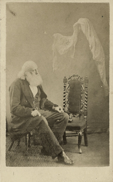

Friday, March the 11th, 2011
back to: title, date or indexes

Invisible Beings is a gallery of spirit photographs by Georgiana Houghton. You can read about her at Ptak Science Books, which tells us, inter alia, that she was in spooky ethereal contact with one Henry Lenny, a deaf and dumb artist who also happened to be dead.